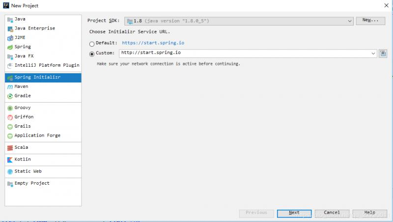
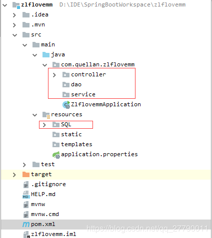
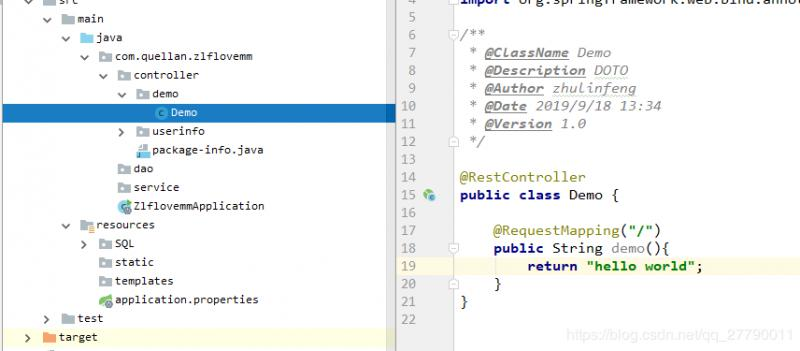
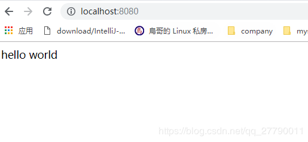
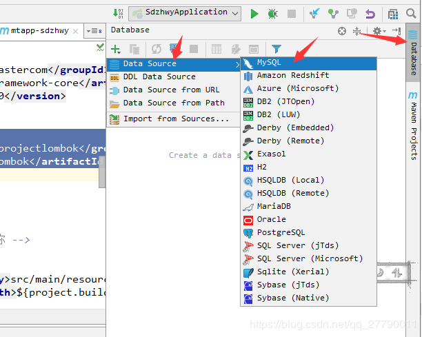
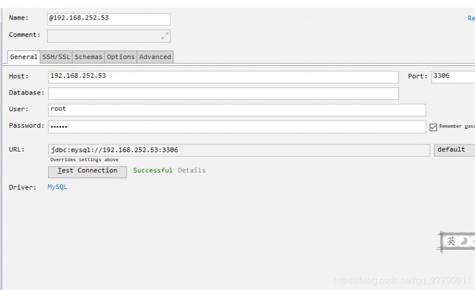
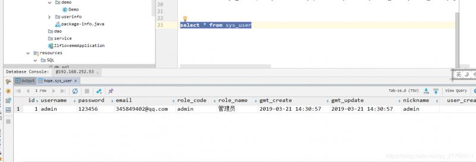
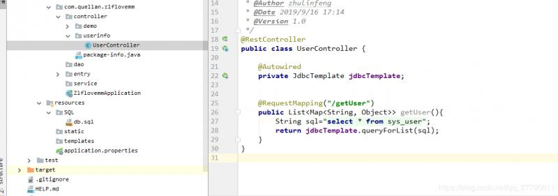
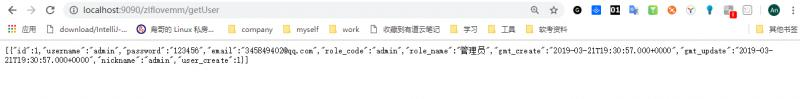

之前零零散散的学习了一些springboot的知识，以及搭建一些springboot的项目，甚至还有一些项目应用到实际项目中了，但是突然有一天想要建一个自己的项目网站。发现自己不知道从何开始。发现自己虽然用了很久，但是让自己 从头开始搭建一个却处处碰壁。所以静下心来好好的整理一下springboot的知识点。以及给自己搭建一个springboot 项目的脚手架。以后方便自己套用。
springboot的之所以火热便是因为开箱即用的特效，低配置甚至无配置使用，方便我们快速上手，我们这里先就什么都不配置吧。
在idea 上直接可以创建springboot 类型项目。

项目名就随便起吧，整个系列就都以这个项目为例啦，整个项目会分享到github 上，大家需要的可以跟着下载学习。
建好的项目目录如下：

其中选中的文件夹是我自己加的，因为我想整个项目的目录大概就是这个样子了。文件名起了zlflovemm 没有什么项目含义，起名太难了，就起了一个自己纪念的名字，大家勿怪。
我们pom.xml 内容，因为后期不管是加其他组件，还是引用 jar 包什么的都是改这里。所以把最初版本拿出来。
<?xml version="1.0" encoding="UTF-8"?>
<project xmlns="http://maven.apache.org/POM/4.0.0" xmlns:xsi="http://www.w3.org/2001/XMLSchema-instance"
xsi:schemaLocation="http://maven.apache.org/POM/4.0.0 https://maven.apache.org/xsd/maven-4.0.0.xsd">
<modelVersion>4.0.0</modelVersion>
<parent>
<groupId>org.springframework.boot</groupId>
<artifactId>spring-boot-starter-parent</artifactId>
<version>2.1.8.RELEASE</version>
<relativePath/> <!-- lookup parent from repository -->
</parent>
<groupId>com.quellan</groupId>
<artifactId>zlflovemm</artifactId>
<version>1.0.0</version>
<name>zlflovemm</name>
<description>zlflovemm project for Spring Boot</description>
<properties>
<java.version>1.8</java.version>
</properties>
<dependencies>
<dependency>
<groupId>org.springframework.boot</groupId>
<artifactId>spring-boot-starter-web</artifactId>
</dependency>
<dependency>
<groupId>org.springframework.boot</groupId>
<artifactId>spring-boot-starter-test</artifactId>
<scope>test</scope>
</dependency>
</dependencies>
<build>
<plugins>
<plugin>
<groupId>org.springframework.boot</groupId>
<artifactId>spring-boot-maven-plugin</artifactId>
</plugin>
</plugins>
</build>
</project>可以看到pom.xml 文件里面东西很少了，
我们还是来写一个hello world 吧，虽然有点幼稚，但毕竟遵循一下古训。
我们在controller 包下创建一个demo 包。在demo 包下创建一个 demo.java .
@RestController
public class Demo {
@RequestMapping("/")
public String demo(){
return "hello world";
}
}
在controller 层用到的注解最多的就是@RestController 和@RequestMapping 了。@RestController和@Controller 注解是使用在controller层的。和@RequestMapping注解是用于设置映射路径的。这里注解就不深入讲解了，后面会进行深入的讲解。
我们代码写完之后，我们来启动项目看一下，这里我们就直接运行 ZlflovemmApplication中的 main 方法就好了。然后在浏览器输入
localhost:8080
到此原型已经搭建好了，可以发现我们什么都没有配置，都是使用的默认的配置，直接写的测试代码，然后就可以直接使用。
但是这样对于一个项目来说远远不够的，我们来为项目增加一些配置。
其实一开始就配置mysql 太唐突了，但是一些小配置，不想再起一节，所以就一起了。
首先当然是创建数据库和表啦，这里idea 也可以连接mysql 数据库，我们就一切都在idea上操作吧。

配置我们数据库连接，我这里已经在我的虚拟机上搭建好了mysql,说到搭建MySQL 也遇到一些坑。没有整理成单独的博客，大家可以参考Ubuntu18.04下安装MySQL

连接好之后，我们执行一下sql ,创建数据库，创建表，插入数据。
CREATE DATABASE /*!32312 IF NOT EXISTS*/`zlflovemm` /*!40100 DEFAULT CHARACTER SET utf8 */;
USE `zlflovemm`;
CREATE TABLE `sys_user` (
`id` INT(11) NOT NULL AUTO_INCREMENT,
`username` VARCHAR(255) NOT NULL,
`password` VARCHAR(255) NOT NULL,
`email` VARCHAR(255) NOT NULL,
`role_code` VARCHAR(255) NOT NULL,
`role_name` VARCHAR(255) NOT NULL,
`gmt_create` DATETIME NOT NULL,
`gmt_update` DATETIME NOT NULL,
`nickname` VARCHAR(255) DEFAULT NULL,
`user_create` INT(11) NOT NULL,
PRIMARY KEY (`id`)
) ENGINE=INNODB AUTO_INCREMENT=17 DEFAULT CHARSET=utf8;
/*Data for the table `sys_user` */
INSERT INTO `sys_user`(`id`,`username`,`password`,`email`,`role_code`,`role_name`,`gmt_create`,`gmt_update`,`nickname`,`user_create`) VALUES (1,'admin','123456','345849402@qq.com','admin','管理员','2019-03-21 14:30:57','2019-03-21 14:30:57','admin',1);
我们测试一下我们数据库建成功没有。
select * from sys_user
这样说明我们数据库是没有问题的。
我们现在pom.xml 中添加依赖
<dependency>
<groupId>mysql</groupId>
<artifactId>mysql-connector-java</artifactId>
<scope>runtime</scope>
</dependency>
<dependency>
<groupId>org.springframework.boot</groupId>
<artifactId>spring-boot-starter-jdbc</artifactId>
</dependency>
<dependency>
<groupId>org.projectlombok</groupId>
<artifactId>lombok</artifactId>
</dependency>前面两个是mysql 依赖，lombok 是方便我们getter方法和setter方法以及引入日志的。后面代码中会体现。
在application.properties中配置如下
server.port=9090
server.servlet.context-path=/zlflovemm
server.tomcat.uri-encoding=UTF-8
spring.http.encoding.charset=UTF-8
spring.http.encoding.enabled=true
spring.http.encoding.force=true
spring.messages.encoding=UTF-8
spring.datasource.driver-class-name=com.mysql.jdbc.Driver
spring.datasource.url=jdbc:mysql://192.168.252.53:3306/zlfdb?characterEncoding=utf-8&useSSL=false&zeroDateTimeBehavior=CONVERT_TO_NULL
spring.datasource.username=root
spring.datasource.password=123456
spring.datasource.max-idle=10
spring.datasource.max-wait=10000
spring.datasource.min-idle=5
spring.datasource.initial-size=5前面配置访问端口为9090，访问路径为/zllovemm/，设置编码格式为utf-8.下面就是配置mysql 。
为了方便，我们就直接在controller编写测试。
在controller包中建一个包 userinfo ,在userinfo中创建一个UserController并编写
@RestController
public class UserController {
@Autowired
private JdbcTemplate jdbcTemplate;
@RequestMapping("/getUser")
public List<Map<String, Object>> getUser(){
String sql="select * from sys_user";
return jdbcTemplate.queryForList(sql);
}
}
然后我们来启动项目，在浏览器中输入
http://localhost:9090/zlflovemm/getUser
可以看到数据库是配置成功的。当然正式的项目肯定不能这样写，正式的项目会采用mybatis 或者JPA ,这个后期项目肯定也是会用的，所以这里就暂时这样写。
项目的雏形就先这样吧，后续加入其它组件，会继续在这个项目上跟新。
github地址：https://github.com/QuellanAn/zlflovemm
这篇就到这里吧，也算是开篇了，后续加油♡